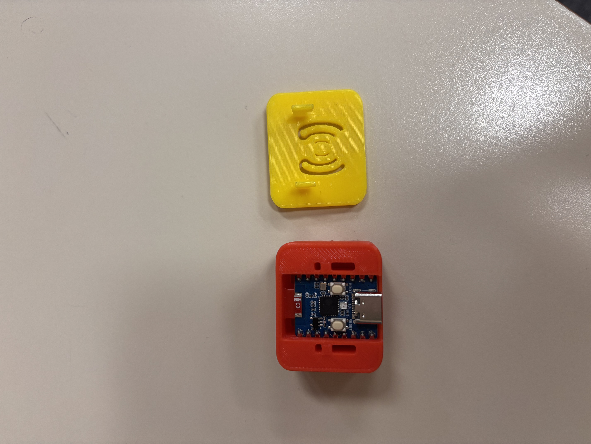
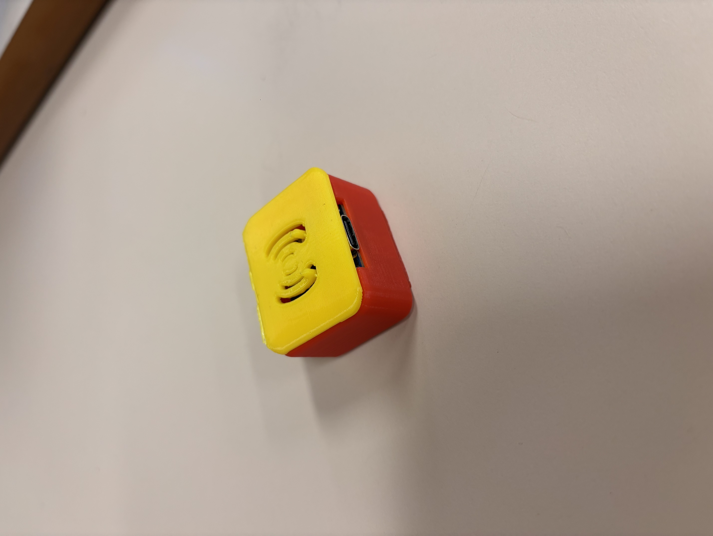

COMPLETE
Overview
The final design is two parts a base and a lid. The case fits the board well and meets the requirements asked for. There is venitlation on the top of the lid, using a stylistic wifi symbol which doubles as a way to make the buttons pressable by being thin enough to provide enough flex. The case is a solid mix or strength for daily use and is functional, ports are useable.
Top view

Case with working buttons

Conclusion
This final design meets the requirements asked for. It provides a strong barrier to protect it during classromm use and typically handling. It had good airflow, acess to ports and buttons, a lid which locks into place and has a slighty degree of style by using the airflow to double as a button area.